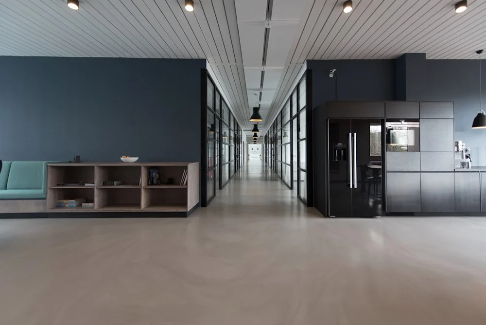

Studi Kasus: Pemasangan Partisi Kaca Tempered Kantor Minimalis Sejuk di Blimbing

📌 Ringkasan Inti
Partisi kaca tempered menjadi solusi umum untuk kantor minimalis di Blimbing karena memberi kesan terbuka namun tetap membatasi ruang secara fungsional. Studi kasus ini membahas proses pemasangan sekat kaca pada ruang meeting bergaya minimalis.
- Partisi kaca tempered umumnya menggunakan ketebalan sekitar 12mm untuk kebutuhan kantor.
- Bingkai aluminium berfungsi menopang kaca sekaligus menjaga tampilan tetap rapi dan kokoh.
- Sealant silikon pada sambungan berperan penting mencegah kebocoran udara maupun suara.
- Ruang meeting menjadi area yang umum menggunakan partisi kaca untuk privasi visual dan akustik dasar.
- Lokasi kantor di kawasan jalan utama Blimbing membuat faktor peredaman kebisingan turut diperhitungkan.
- 1. Apa Itu Partisi Kaca Tempered untuk Kantor
- 2. Bagaimana Studi Kasus Pemasangan di Ruang Meeting Blimbing
- 3. Apa Spesifikasi Umum Kaca dan Bingkai yang Digunakan
- 4. Apakah Partisi Kaca Tempered Bergaransi Terhadap Kebocoran
- 5. Apa Manfaat Partisi Kaca Tempered untuk Kantor Minimalis
- 6. Kesalahan Umum Saat Memasang Partisi Kaca Kantor
Partisi kaca tempered menjadi solusi utama untuk kantor modern minimalis di Blimbing karena mampu memberikan kesan ruangan yang lapang, terang, dan profesional tanpa mengorbankan pembagian fungsi ruang kerja.
1. Apa Itu Partisi Kaca Tempered Untuk Kantor
Partisi kaca tempered adalah sekat ruangan berbahan kaca yang telah melalui proses pemanasan ekstrem (thermal tempering) hingga 700°C kemudian didinginkan mendadak, sehingga memiliki kekuatan hingga 4–5 kali lipat dibanding kaca biasa. Partisi ini umum dipakai di kantor untuk memisahkan ruang kerja tanpa menghalangi pencahayaan alami.
Di Blimbing, partisi kaca tempered banyak dipilih untuk kantor bergaya minimalis karena memberi kesan luas meski ruangan terbagi menjadi beberapa bilik kerja. Bingkai aluminium biasanya digunakan sebagai penopang kaca agar posisi partisi tetap stabil dan kedap getaran.

2. Bagaimana Studi Kasus Pemasangan Di Ruang Meeting Blimbing
Studi kasus ini membahas pemasangan partisi kaca tempered pada ruang meeting kantor minimalis di kawasan Jalan Letjen Sutoyo, Blimbing. Ruang meeting dipilih karena membutuhkan privasi visual sekaligus kesan modern yang terbuka.
Proses pemasangan umumnya dimulai dari pengukuran presisi bukaan ruang dengan toleransi kurang dari 1mm, dilanjutkan dengan pemasangan bingkai aluminium sebagai rangka penopang kaca tempered. Ketebalan kaca yang umum digunakan untuk partisi kantor berada di kisaran 12mm, dipilih karena kokoh, aman, dan memberi peredaman suara yang baik.
Setelah bingkai terpasang, kaca tempered dimasukkan dan dikunci menggunakan aksesori penjepit (glass clip/U-channel), kemudian sambungan antara kaca dan bingkai ditutup menggunakan sealant silikon netral berkualitas tinggi. Tahap akhir berupa pembersihan permukaan kaca agar hasil akhir terlihat rapi tanpa bekas sisa material.
3. Apa Spesifikasi Umum Kaca Dan Bingkai Yang Digunakan
Spesifikasi umum yang dipakai pada partisi kantor mencakup ketebalan kaca 10mm–12mm dengan kaca tempered berstandar SNI, serta bingkai aluminium dengan finishing warna netral seperti hitam anodize, putih powder coating, atau coklat tua. Kombinasi ini sangat serasi dengan konsep kantor minimalis modern.
Selain ketebalan kaca, jenis sealant juga menjadi bagian penting dari spesifikasi. Sealant silikon netral (non-asam) dipilih karena elastis, tidak menimbulkan bau menyengat, dan mampu meredam getaran kecil pada bingkai aluminium akibat perubahan suhu ruangan ber-AC sepanjang hari.
Paket Pasang Partisi Kaca Tempered Kantor Malang Raya
Tingkatkan estetika dan profesionalisme kantor Anda di Blimbing, Lowokwaru, atau Kota Malang dengan partisi kaca tempered frameless atau bingkai slim aluminium bergaransi resmi.
4. Apakah Partisi Kaca Tempered Bergaransi Terhadap Kebocoran
Garansi terhadap kebocoran udara, air (untuk partisi luar), serta kerekatan sambungan sealant silikon diberikan oleh KUSEN ALUMINIUM Malang. Garansi ini mencakup pemeriksaan berkala dan perbaikan ulang sambungan karet atau silikon apabila terjadi celah dalam periode masa garansi.
Penting bagi pengelola kantor di Blimbing untuk memastikan kesepakatan garansi tertulis secara resmi sebelum proyek dikerjakan, mencakup jaminan keamanan kaca dan kekokohan engsel pintu kaca tempered (floor hinge).
5. Apa Manfaat Partisi Kaca Tempered Untuk Kantor Minimalis
Manfaat utama partisi kaca tempered adalah menjaga pencahayaan alami tetap merata ke seluruh ruangan meski dibagi menjadi beberapa zona kerja. Hal ini membantu menghemat penggunaan listrik lampu di siang hari sekaligus menciptakan suasana kantor yang terbuka dan produktif.
Selain itu, partisi kaca tempered sangat mudah dibersihkan dibanding partisi konvensional berbahan gypsum atau triplek kayu, serta memberikan sentuhan arsitektur kelas atas yang meningkatkan citra perusahaan di mata klien.
"Pemasangan partisi kaca tempered membutuhkan presisi pengukuran tingkat tinggi karena kaca tempered tidak dapat dipotong ulang di lokasi setelah diproses dari pabrik. Akurasi adalah kunci utama keselamatan."
6. Kesalahan Umum Saat Memasang Partisi Kaca Kantor
Kesalahan paling fatal yang sering terjadi adalah pengukuran bukaan yang kurang akurat sehingga kaca tempered yang sudah jadi tidak muat pada bingkai dinding. Kesalahan lainnya adalah penggunaan sealant non-struktural murah yang cepat getas dan berubah warna menguning.
Kurangnya perencanaan jalur sirkulasi udara juga sering membuat ruang meeting kaca terasa pengap jika tidak dilengkapi titik inlet AC atau exhaust fan yang memadai.
Kesimpulan Praktis
Partisi kaca tempered merupakan investasi terbaik untuk mewujudkan ruang kerja modern, terang, dan berkelas di Blimbing. Pastikan memilih aplikator berpengalaman yang memberikan jaminan presisi pemotongan rangka serta garansi resmi pengerjaan.
Pertanyaan Paling Sering Diajukan (FAQ)
Ketebalan sekitar 10mm hingga 12mm paling umum digunakan untuk partisi kantor karena kokoh, aman dari benturan, dan mampu meredam kebisingan secara optimal.
Sangat aman, karena kaca tempered memiliki kekuatan 4-5 kali lipat dibanding kaca biasa dan jika pecah akan menjadi butiran tumpul kecil yang tidak tajam membahayakan.
Ya, aplikator profesional seperti KUSEN ALUMINIUM Malang memberikan garansi perbaikan sealant dan penyesuaian hardware pintu kaca dalam masa pemeliharaan resmi.